论文：XGBoost: A Scalable Tree Boosting System
1.1 决策树
决策树学习本质上是从训练数据集中归纳出一组分类规则。
学习过程通常包含3个步骤：
- 特征选择(评估标准：信息增益，信息增益比，基尼指数，平方误差)
- 决策树的生成算法(ID3,C4.5,CART)
- 决策树的修剪(前剪枝early stop,后剪枝相当于regularization)
这里使用ID3算法来简单说明决策树的生成过程。ID3算法中使用信息增益作为特征选择的评估标准，更过关于信息增益的知识请参考统计学习方法-信息增益
给定数据集：
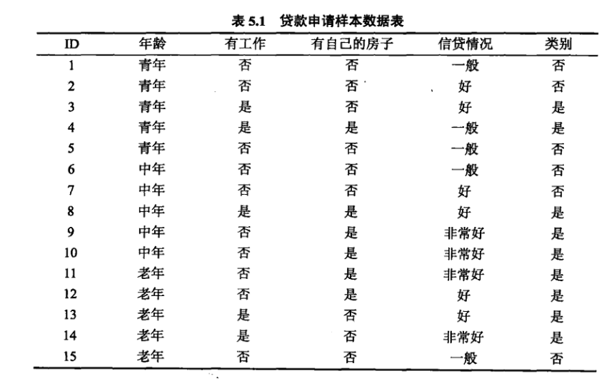
ID3算法的流程：
输入：训练数据集D，特征集A，阈值
输出：决策树T
- 若D中所有实例属于同一类，则T为单结点树，并将类作为该结点的类标记，返回T。
- 若，则T为单节点树，并将D中实例数最大的类作为该节点的类标记，返回T。
- 否则，按信息增益算法计算A中各特征对D的信息增益，选择信息增益最大的特征。
- 如果的信息增益小于阈值，则置T为单节点树，并将D中实例数最大的类作为该节点的类标记，返回T
- 否则，对的每一可能值，依将D分割为若干非空子集，将中实例数最大的类作为标记，构建子节点，由节点及其子节点构成树T，返回T
- 对第i个子节点，以为训练集，以A-为特征集，递归地调用步(1)~步(5)，得到子树，返回。
执行ID3算法中的步骤3：根据信息增益的定义，遍历所有的特征，得到特征“有自己的房子”的信息增益值最大，所以选择特征”有自己的房子”作为根结点的特征。它将训练数据集D划分为两个子集D1(有自己的房子-是)，和D2(有自己的房子-否)。
由于D1只有同一类的样本点，满足终止条件(ID3算法中的步骤1)，所以作为一个叶子结点(类标记)。
D2则需要从剩下的特征：年龄、有工作、信贷情况中选择新的特征，执行ID3算法中的步骤3，得到信息增益最大的特征是”有工作”，因此选择它作为新的结点，它将训练数据集D2划分为D21,D22，由于划分得到的两个子集都满足终止条件(ID3算法中的步骤1)，因此构建决策树结束。
注意：这里只考虑了算法ID3 中其中两个个终止条件(即步骤1和步骤2，由于这里只使用了2个特征就可以把所有样本正确分开，所以没有出发步骤2中的终止条件)，还有一个终止条件，即步骤4，这里我们并没有给出一个阈值，同时判断当前信息增益与阈值的比较情况。
通过以上的决策树构建过程，最终得到的决策树如下所示：
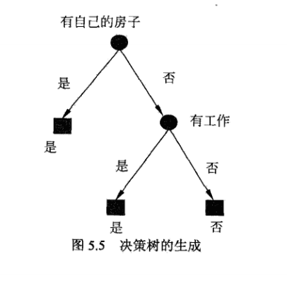
2.1 CART树
关于CART树更多的细节及python实现请参考统计学习方法-回归树生成
这里只讲解CART回归树。
假设X与Y分别为输入和输出变量，并且Y是连续变量，给定训练数据集:
考虑如何生成回归树。
假设已将输入空间划分为M个单元，并且在每个单元上有一个固定的输出值，于是回归树模型可表示为:
当输入空间的划分确定时，可以用平方误差来表示回归树对于训练数据的预测误差。
用平方误差最小的准则求解每个单元上的最优输出值。易知，单元上的的最优值是上的所有输入实例对应的输出的均值，即
这里采用启发式方法对输入空间进行划分。选择第j个变量和它取的值s，作为切分变量和切分点并定义两个区域:
然后寻找最优切分变量j和最优切分点s。具体地，求解:
对固定输入变量j可以找到最优切分点s。
遍历所有输入变量，找到最优的切分变量j，构成一个对(j,s)。以此将输入空间划分为两个区域。
接着，对每个区域重复上述划分过程，直到满足停止条件为止。这样就生成一颗回归树。通常称为最小二乘回归树，现将算法叙述如下:
算法(最小二乘回归树生成算法)
输入:训练数据集D
输出:回归树f(x)
在训练数据集所在的输入空间中，递归的将每个区域划分为两个子区域并决定每个子区域上的输出值，构建二叉决策树：
选择最优切分变量j与切分点s，求解
遍历变量j，对固定的切分变量j扫描切分点s，选择使式(2-5)达到最小值的对(j,s)。
用选定的对(j,s)划分区域并决定相应的输出值:
继续对两个子区域调用步骤(1)(2)，直至满足停止条件
将输入空间划分为M个区域，生成决策树:
3.1 AdaBoost与前向分步算法
3.1.1 AdaBoost算法
假设给定一个二类分类的训练数据集，其中，每个样本点由实例与标记组成。实例，标记，是实例空间，是标记集合。
AdaBoost利用以下算法，从训练数据中学习一系列弱分类器或基本分类器，并将这些弱分类器线性组合成为一个强分类器。
算法(AdaBoost)
输入：训练数据集，其中，；弱学习算法；
输出：最终分类器
(1)初始化训练数据的权值分布
(2)对m=1,2,…,M(表示有 M个弱分类器)
(a)使用具有权值分布的训练数据集学习，得到基本分类器:
(b)计算在训练数据集上的分类误差率
(c)计算的系数
这里的对数是自然对数。
(d)更新训练数据集的权值分布
这里，是规范化因子
(3)构建基本分类器的线性组合
得到最终分类器
对AdaBoost算法作如下说明:
步骤(1) 假设训练数据集具有均匀的权值分布(即每个训练样本在基本分类器的学习中作用相同)；在此权值分布下，基于原始数据训练出基本分类器
步骤(2)AdaBoost反复学习基本分类器，在每一轮m=1,2,…,M顺次的执行下列操作:
(a)使用当前分布加权的训练数据集，学习基本分类器。
(b)计算基本分类器在加权训练数据集上的分类误差率:
这里，表示第m轮第i个样本点的权值，。这表明，在加权的训练数据集上的分类误差率是被误分类的样本的权值之和。
(c)计算基本分类器的系数，表示在最终分类器中的重要性。由式(3-2)可知，当时，，并且随着的减小而增大。相当于误分类率越小的基本分类器在最终分类器中的重要性越大。
(d)更新训练数据的权值分布。式(3-4)可以写成:
由此可知，被基本分类器误分类样本的权值得以扩大，而被正确分类样本的权值却得以缩小。
由式(3-2)可知误分类样本的权值被放大倍。
步骤(3) 线性组合实现M个基本分类器的加权表决。系数表示了基本分类器重要性，这里，所有之和并不为1。的符号决定实例x的类，的绝对值表示分类的确信度。
关于adaboost的更详细的说明及python实现请参考统计学习方法-adaboost)
3.1.2 前向分步算法
考虑加法模型:
其中，为基函数，为基函数的参数，为基函数的系数。由此可见，式(3-6)是加法模型。
在给定训练数据及损失函数的条件下，学习加法模型称为经验风险极小化即损失函数极小化问题:
前向分步算法的求解思路是：因为学习的是加法模型，如果能够从前向后，每一步只学习一个基函数及其系数，逐步逼近优化目标函数式(3-10)，那么就可以简化优化的复杂度。具体地，每步只需优化如下损失函数:
给定训练数据集，，。损失函数和基函数的集合，学习加法模型的前向分步算法如下:
算法(前向分步算法)
输入:训练数据集；损失函数；基函数集；
输出:加法模型。
(1)初始化
(2)对m=1,2,…,M
(a)极小化损失函数
得到参数，。
(b)更新
(3)得到加法模型
这样，前向分步算法将同时求解从m=1到M所有参数，的优化问题简化为逐次求解各个，的优化问题。
3.1.3 AdaBoost算法与前向分步算法的关系
AdaBoost算法还可以理解为:模型为加法模型、损失函数为指数函数、学习算法为前向分步算法时的学习方法。
关于AdaBoost算法与前向分步算法的等价性证明如下：
前向分步算法学习的是加法模型，当基函数为基本分类器时，该加法模型等价于AdaBoost的最终分类器：
由基本分类器及其系数组成，m=1,2,…,M。前向分步算法逐一学习基函数，这一过程与AdaBoost算法逐一学习基本分类器的过程一致。
接下来证明前向分步算法的损失函数是指数损失函数：
时，其学习的具体操作等价于AdaBoost算法学习的具体操作。
假设经过m-1轮迭代前向分步算法已经得到:
在第m轮迭代得到，和。
目标是使前向分步算法得到的和使在训练数据集T上的指数损失最小，即
式(3-16)可以表示为:
其中，。因为既不依赖也不依赖于G，所以与最小化无关。但依赖于，随着每一轮迭代而发生改变。
证明式(3-17)的解和就是AdaBoost算法所得到的和。
求解式(3-17):
求。对任意，使式(3-17)最小的由下式得到：
其中，。
此分类器即为AdaBoost算法的基本分类器，因为它是使第m轮加权训练数据分类误差率最小的基本分类器。
求。式(3-17)可写成以下形式：
将已求得的代入式(3-18)，可得：
对求导并使导数为0，即得到使式(3-17)最小的。
其中，是分类误差率:
这里的与AdaBoost算法第2(c)步的完全一致。
最后来看每一轮样本权值的更新。由
以及，可得
这与AdaBoost算法第2(d)步的样本权值的更新，只相差规范化因子，因而等价。
4.1 回归问题提升树的前向分布算法
对应着二分类问题的adaboost算法，回归问题提升树对应的加法模型如下所示：
已知一个训练数据集为输入空间，，为输出空间。树可以表示为如下加法模型的形式:
其中，参数表示树的区域划分和各区域上的常数。J是回归树的复杂度即叶节点个数。
在前向分步算法的第m步，给定当前模型，需求解
得到，即第m棵树的参数。
当采用平方误差损失函数时，
令，其损失变为：
这里，是当前模型拟合数据的残差。所以，对回归问题的提升树来说，只需简单的拟合当前模型的残差。
算法（回归问题的提升树算法)
输入:训练数据集；
输出:提升树
(1)初始化
(2)对m=1,2,…,M
(a)计算残差
(b)拟合残差学习一个回归树，得到
(c)更新
(3)得到回归问题提升树
5.1 GBDT
前面的回归问题提升树的前向分步算法的工作就是拟合当前模型的残差，在GBDT中，利用损失函数的负梯度在当前模型的值:
作为回归问题提升树算法中残差的近似值来拟合一个回归树。
算法(梯度提升算法)
输入:训练数据集为输入空间，为输出空间。损失函数；
输出:回归树。
(1)初始化
(2)对m=1,2,…,M
(a)对i=1,2,…,N，计算
(b)对拟合一个回归树，得到第m棵树的叶节点区域，j=1,2,…,J
(c)对j=1,2,…,J，计算
(d)更新
(3)得到回归树
算法说明如下：
第1步初始化，估计使损失函数极小化的常数值，它是只有一个根节点的树。
第2(a)步计算损失函数的负梯度在当前模型的值，将它作为残差的估计。(对于平方损失函数，它就是所谓的残差；对于一般损失函数，它是残差的近似值)
第2(b)步估计回归树节点区域，以拟合残差的近似值。
第2(c)步利用线性搜索估计叶节点区域的值，使损失函数极小化。
第2(d)步更新回归树。
第3步得到输出的最终模型。
6.1 XGBoost
6.1.1 模型形式
给定数据集(|D|=n,)，xgboost利用前向分步算法，学习到包含K棵树的加法模型：
此处，此处的F表示基学习器为CART树的集合。T表示基学习器的叶子结点数。
每一个基学习器对应着一个树结构q(X)(它的意义是将样本X分到某个叶子结点上)；叶子结点的score向量，表示第i个叶子结点对应的score。所以表示基学习器对样本X的预测值。
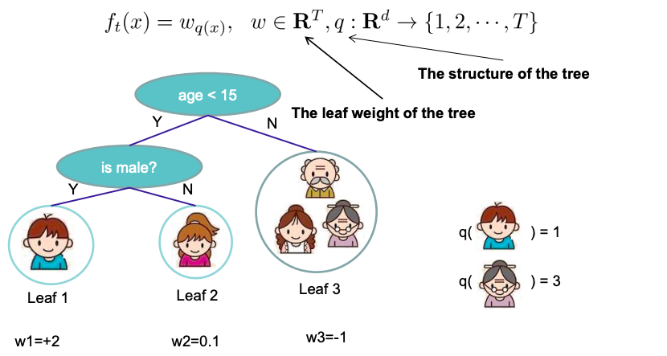
那么，根据以上的加法模型，其最终的预测方式如下图所示，把每个基学习器预测到的结果(对应的叶子结点score值)累加起来作为最终的预测值:
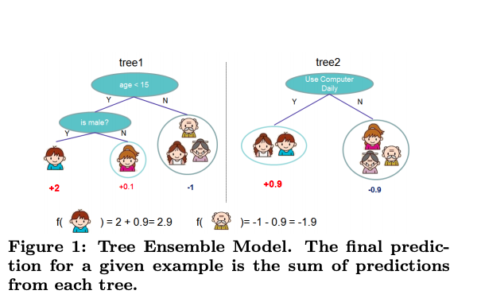
回归树的预测输出是实数值，对于回归问题，可以直接作为预测值；对于分类问题，需要映射成概率，比如采用sigmoid函数，
6.1.2 目标函数
目标函数中第一项为损失函数；第二项为正则项，对每棵回归树(基学习器)的复杂度进行了惩罚。
损失函数可以是square loss,对数损失函数等，正则化项可以是L1,L2。
根据前向分步算法，在前向分步算法 的第t步，给定前t-1棵回归树的情况下，第t棵回归树可表示为：
那么，第t步的目标函数可写成：
如式(6-4)所示，第t步的目标函数变成了求解找到使得式(6-4)取最小值的回归树。
二阶泰勒展开：
对式(6-4)进行二阶泰勒展开：
其中，，
去掉常数项，式(6-5)简化为:
在xgboost中，对基学习器的复杂度定义为：
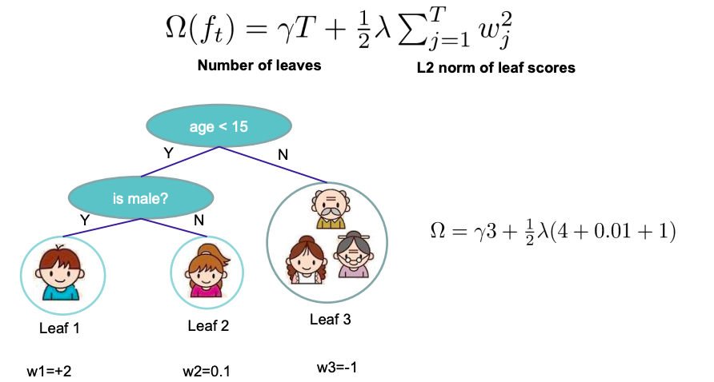
定义叶子结点j所包含的样本集为，那么把树结构的定义式代入式(6-6)中，得：
根据一元二次方程的性质，令 ，代入式(6-7)，得：
给定树结构，每个叶子结点的score的解为:
把式(6-9)代入式(6-8)，得：
6.1.3 学习策略
当回归树的结果确定时，我们可以推导出最优叶结点分数式(6-9)以及对应的最小损失值式(6-10)，那么问题是怎么确定树的结构？
暴力枚举所有可能的树结构，选择损失值最小的，这是NP难问题。(不可行)
xgboost采用贪心算法，每次尝试分裂一个叶结点，计算分别前后的增益，选择增益最大的分裂点。那么如何定义增益函数？
首先，观察式(6-10)，衡量了叶子结点j对总体损失的贡献，我们希望损失越小越好，则标红部分的值越大越好(因为前面是负号)。
因此，对一个叶子结点进行分裂，分裂前后的增益函数定义为:
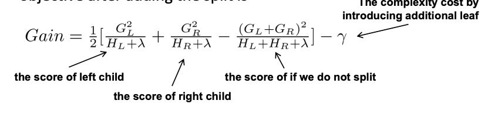
增益函数也可表示成论文中的公式(7)的形式:
6.1.4树结点分裂方法(split finding)
6.1.4.1 精确贪心算法
遍历所有的特征的所有可能的分裂点，计算gain值，选取值最大的(feature,value)去分割。分裂算法伪代码如下所示：
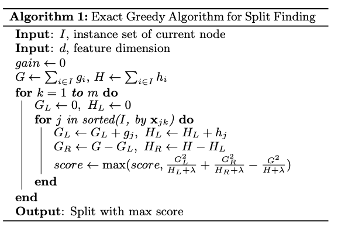
时间复杂度为O(dKnlogn)，对每一个特征进行排序，排序时间为O(nlogn)，d维特征(相当于伪代码中的m)，树的深度为K。
假如现在枚举的是年龄特征。现在考虑划分点a，因此要计算枚举和 的一阶梯度和：
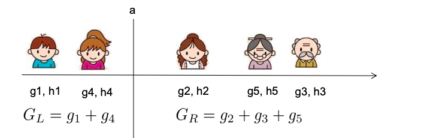
分裂不一定会使得情况变好，因为有一个引入新叶子的惩罚项，相当于进行树的剪枝操作。同时，还可以引入early stop策略，使得当引入新的分裂带来的增益小于一个阈值的时候，就不进行分裂操作了。
6.1.4.2 近似算法
第一种精确算法的时间复杂度高，而且对于数据量十分庞大的时候，不能全部放入内存中，会使得精确贪心算法变得很慢。因此引入一种近似算法。
算法思想：对于每个特征，只考察候选切分点(分位点)，减少计算复杂度。根据候选切分点把当前结点的样本放入对应的桶中，对每个桶的G,H进行累加。最后在候选切分点集合上贪心查找，和精确贪心算法类似。算法描述如下：
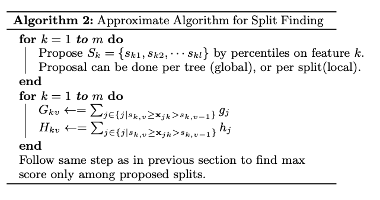
根据分位点给出对应的一组候选切分点后，算法的简单示例如下所示：
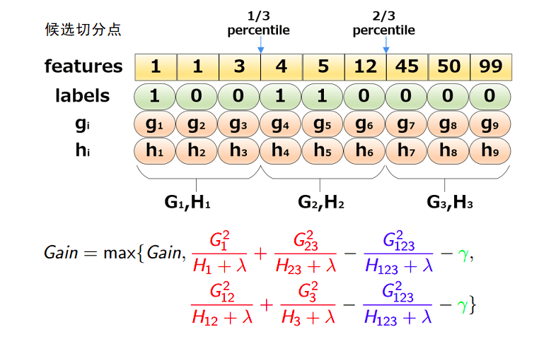
那么，现在就有两个问题：
- 什么时候进行候选切分点的选取？
- 如何选取候选切分点？
上面的示例，给出了第二个问题的一个简单的解决方案，即采用分位数。
对于第一个问题，通过算法伪代码我们可以看到，有两种策略，全局策略(Global)和局部策略(Local):
- Global:学习每棵树前，提出候选切分点
- Local:每次分裂前，重新提出候选切分点
关于这两种策略以及精确贪心算法的对比情况，如下图：
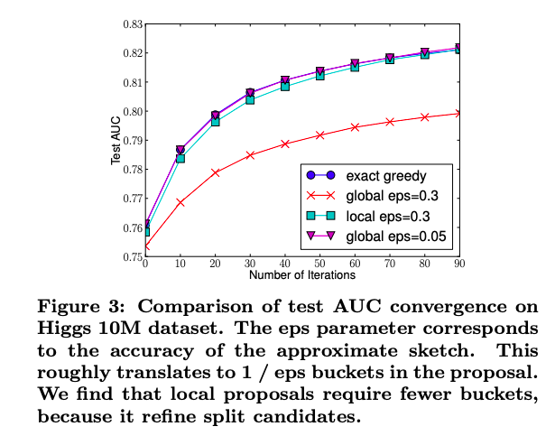
从上图可以看出(桶的个数等于1/eps):
- 全局切分点的个数够多的时候，和精确贪心算法性能相当(global eps=0.05，几乎与exact greedy重合)
- 局部切分点个数不需要那么多，但是性能与exact greedy相差不多，计算复杂度介于exact greedy 和global 之间。
对于第二个问题，xgboost并没有采用简单的分位数方法，而是提出一种以二阶梯度h为权重的分位数算法。比如，加权三分位切分点如下图所示：
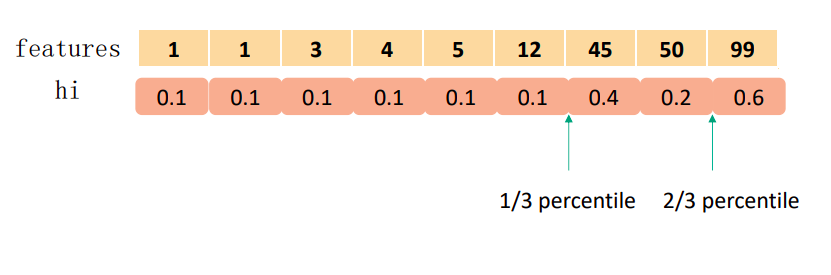
6.1.5 切分点的选取-weighted quantile sketch
首先，对特征k构造multi-set数据集：，其中表示样本i的特征k的取值，而则表示对应的二阶梯度。
定义一个rank函数：
式(6-11)表示第k个特征 小于z的样本比例，相当于分位数的作用。而候选切分点要求：
以上的公式相当于表示，让相邻两个候选点相差不超过给定阈值，因此总共可以把特征k分成份。
为什么使用二阶梯度加权？把式(6-6)写成以下形式：
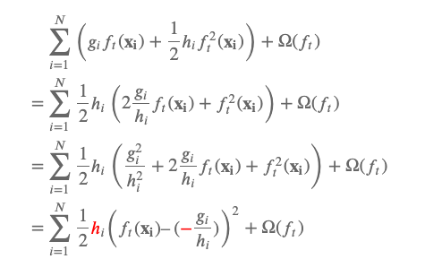
推导第三行加入 为常量，因此可以加入目标函数中，不影响目标函数的解。
从上式中可以看出，hi有对loss加权的作用。
6.1.6 稀疏值处理-sparsity-aware split finding
稀疏数据的产生原因：
- 数据缺失值
- 大量的0值
- one-hot编码
xgboost能对缺失值自动进行处理，其思想是对于缺失值自动学习出它该被划分的方向(左子树或右子树):
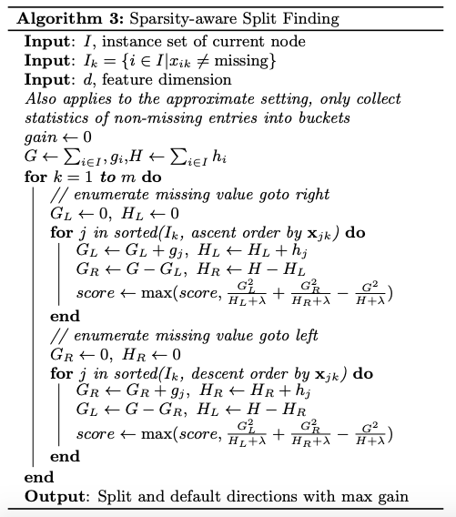
上述的算法的简单说明如下：
- 让特征k的所有缺失值的都到右子树，然后和之前的一样，枚举划分点，计算最大的gain
- 让特征k的所有缺失值的都到左子树，然后和之前的一样，枚举划分点，计算最大的gain
这样最后求出最大增益的同时，也知道了缺失值的样本应该往左边还是往右边。使用了该方法，相当于比传统方法多遍历了一次，但是它只在非缺失值的样本上进行迭代，因此其复杂度与非缺失值的样本成线性关系。
6.1.7 shrinkage和列抽样
除了在目标函数中加入正则项来防止过拟合，还可以通过shinkage和列抽样技术来防止过拟合。
shrinkage技术即在每轮迭代生成的树结构中，对叶子结点乘以一个缩减权重，该操作的作用就是减少每棵树的影响力，留更多的拟合空间给后来的树结构。
列抽样技术，它有两种实现方式，一种是按层随机，另一种是按树随机(构建树前就随机选择特征)。
对于按层随机方式，在每次分裂一个结点的时候，对同一层内的每个结点分裂之前，先随机选择一部分特征，这时候只需要遍历一部分特征，来确定最后分割点。
对于按树随机方式， 即构建树结构前就随机选择特征，之后所有叶子结点的分裂都只使用这部分特征。
行抽样则是bagging的思想，每次只抽取部分的样本进行训练，而不是用全部样本，从而增加树的多样性。
6.1.8 系统设计
6.1.8.1 分块并行
在建树的过程中，最耗时是找最优的切分点，而这个过程中，最耗时的部分是将数据排序。为了减少排序的时间，提出Block结构存储数据。
- Block中的数据以稀疏格式CSC进行存储
- Block中的特征进行排序（不对缺失值排序）
- Block 中特征还需存储指向样本的索引，这样才能根据特征的值来取梯度。
- 一个Block中存储一个或多个特征的值
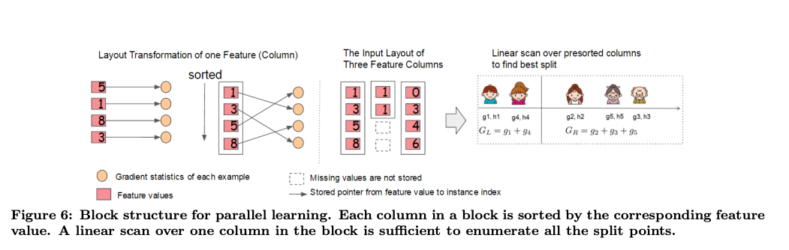
可以看出，只需在建树前排序一次，后面节点分裂时可以直接根据索引得到梯度信息。
- 在Exact greedy算法中，将整个数据集存放在一个Block中。这样，复杂度从原来的𝑂(𝐻𝑑||𝑥||0log𝑛)降为𝑂(𝐻𝑑||𝑥||0+||𝑥||0log𝑛)，其中||𝑥||0为训练集中非缺失值的个数。这样，Exact greedy算法就省去了每一步中的排序开销。
- 在近似算法中，使用多个Block，每个Block对应原来数据的子集。不同的Block可以在不同的机器上计算。该方法对Local策略尤其有效，因为Local策略每次分支都重新生成候选切分点。
Block结构还有其它好处，数据按列存储，可以同时访问所有的列，很容易实现并行的寻找分裂点算法。此外也可以方便实现之后要讲的out-of score计算。
缺点是空间消耗大了一倍。
6.1.8.2 缓存优化-cache-aware access
使用Block结构的一个缺点是取梯度的时候，是通过索引来获取的，而这些梯度的获取顺序是按照特征的大小顺序的。这将导致非连续的内存访问，可能使得CPU cache缓存命中率低，从而影响算法效率。
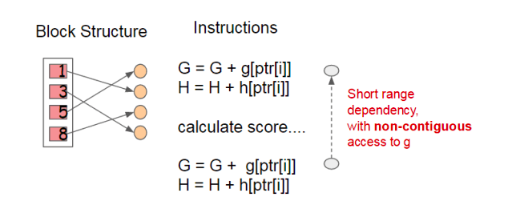
因此，对于exact greedy算法中, 使用缓存预取。具体来说，对每个线程分配一个连续的buffer，读取梯度信息并存入Buffer中（这样就实现了非连续到连续的转化），然后再统计梯度信息。该方式在训练样本数大的时候特别有用，见下图：
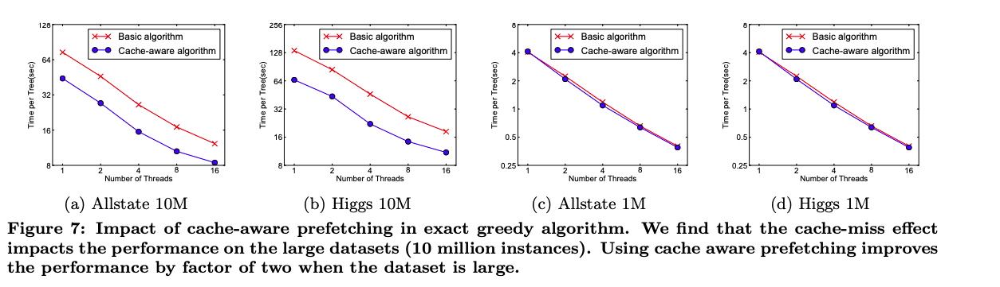
在approximate 算法中，对Block的大小进行了合理的设置。定义Block的大小为Block中最多的样本数。设置合适的大小是很重要的，设置过大则容易导致命中率低，过小则容易导致并行化效率不高。经过实验，发现2^16比较好。
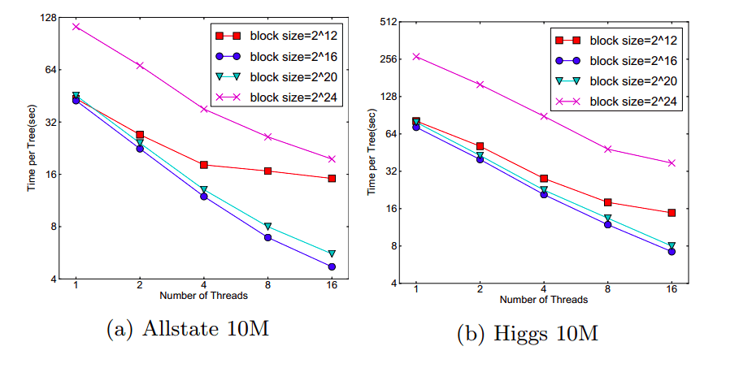
6.1.8.3 Blocks for Out-of-core Computation
当数据量太大不能全部放入主内存的时候，为了使得out-of-core计算称为可能，将数据划分为多个Block并存放在磁盘上。
- 计算的时候，使用独立的线程预先将Block放入主内存，因此可以在计算的同时读取磁盘
- Block压缩，貌似采用的是近些年性能出色的LZ4 压缩算法，按列进行压缩，读取的时候用另外的线程解压。对于行索引，只保存第一个索引值，然后用16位的整数保存与该block第一个索引的差值。
- Block Sharding， 将数据划分到不同硬盘上，提高磁盘吞吐率